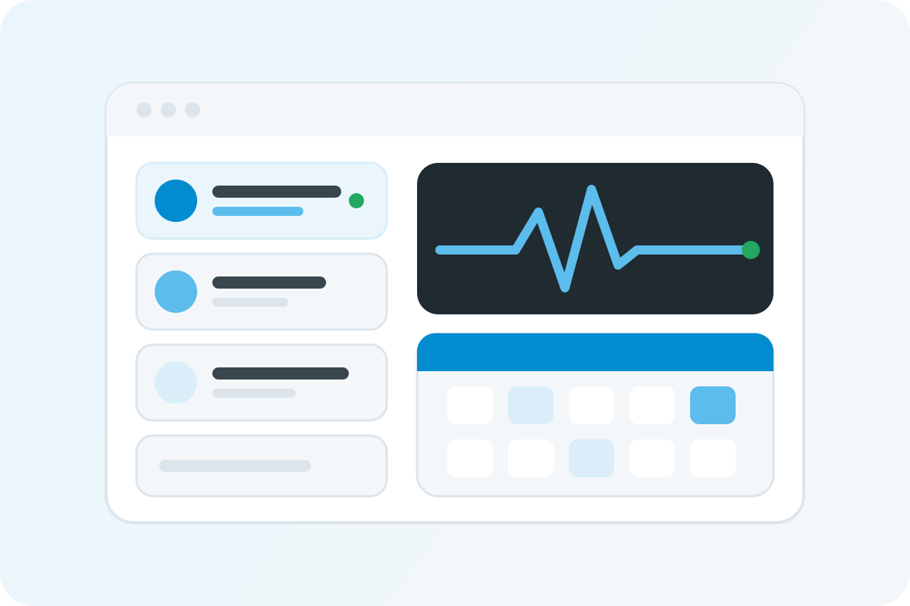
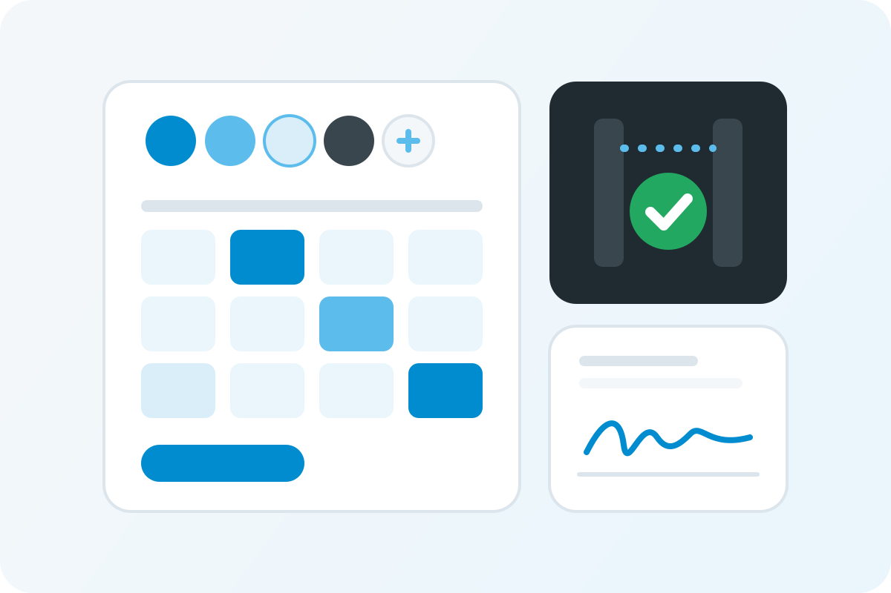
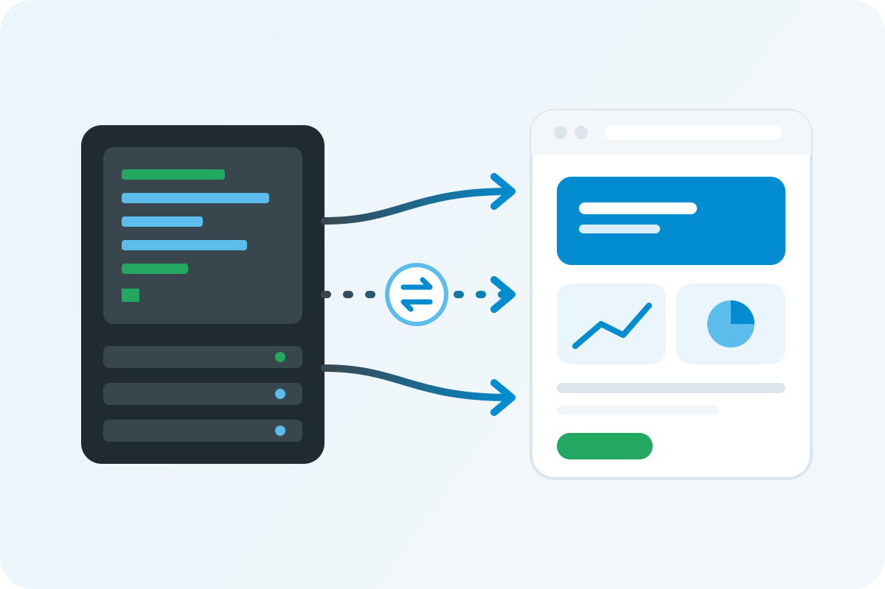
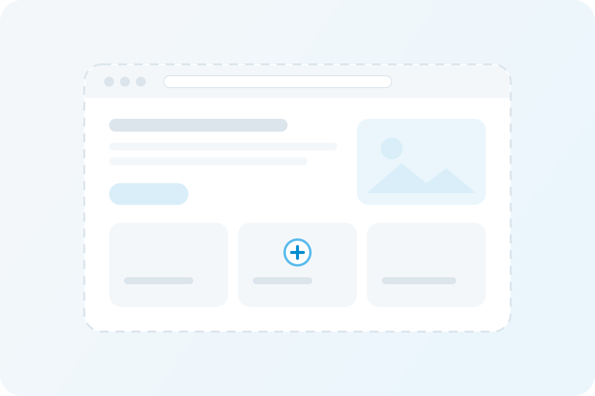

Software gestionale clinico
Software sanitario per Fresenius Medical Care, sviluppato tramite Klan.it: accettazione pazienti, esami di laboratorio, gestione dei trattamenti dialitici e lettura della tessera sanitaria.
Portfolio
Una selezione di progetti a cui ho contribuito come sviluppatore e consulente. I casi di studio dettagliati sono in preparazione e saranno presto pubblicati qui.
Progetti
Dal software gestionale clinico alle piattaforme di servizi per la comunità, fino ai sistemi bancari core.

Software sanitario per Fresenius Medical Care, sviluppato tramite Klan.it: accettazione pazienti, esami di laboratorio, gestione dei trattamenti dialitici e lettura della tessera sanitaria.

Piattaforma per Opera San Francesco a Milano che copre registrazione dei beneficiari, agenda, servizi e varchi di accesso, con firma digitale integrata tramite API esterne.

Sistemi mainframe per grandi banche italiane, sviluppati tramite Engineering: Centrale Rischi, segnalazioni di vigilanza SISBA/HERMIONE e monitoraggio del rischio di credito.

Hai un'applicazione web, un'integrazione o un sistema legacy da far evolvere? Parliamo di come posso aiutarti.
Inizia una conversazioneCasi di studio
Ogni progetto sarà documentato con il problema, il mio ruolo, la soluzione, lo stack tecnologico e il risultato.
I casi di studio completi sono in arrivo. Nel frattempo, scrivimi pure per parlare di uno qualsiasi di questi progetti.
Che si tratti di una nuova applicazione web, di un'integrazione o della modernizzazione di un sistema legacy, parliamone.